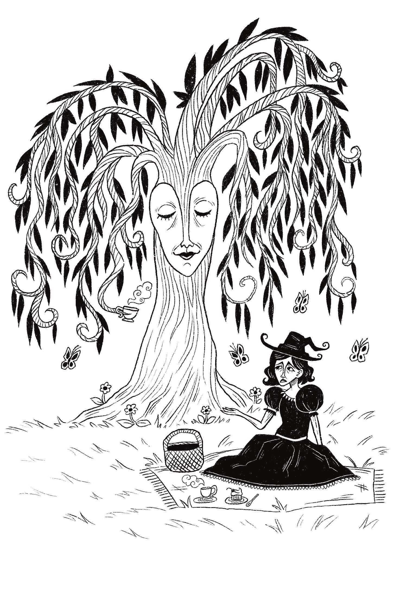

"Poems From A Witch's Pocket Front Cover" - My idea for the front cover was to illustrate the outside of the witch's
cottage. I envisioned her to live in an enchanted forest that is
abundant with flowers, mushrooms and woodland creatures. The
pages of her poems are scattered amongst the grass.
"The Faraway Siblings" - I've always loved the embodiment of the moon being a feminine,
almost sisterly entity. Instead of drawing the moon as a circle or
crescent in the sky, I wanted to draw her as a figure with a cloak
made of stars. From a personal perspective, I always feel
'protected' by the moon - I wanted this illustration to almost feel safe
and intimate.

"I Complain To My Friend Who Has Been Turned Into A Tree" - For this illustration, I was heavily inspired by 'The Green Man' which
is a pagan symbol of rebirth. I came up with the idea of drawing the
witch's friend as a willow tree, with the branches flowing downwards
to embody the hair of a woman.
Development
I started this project with very rough sketches of 'witchy' imagery to
cultivate a sense of style for my illustrations. A lot of these sketches
involve nature, animal familiars and imagery mentioned in the
poems.